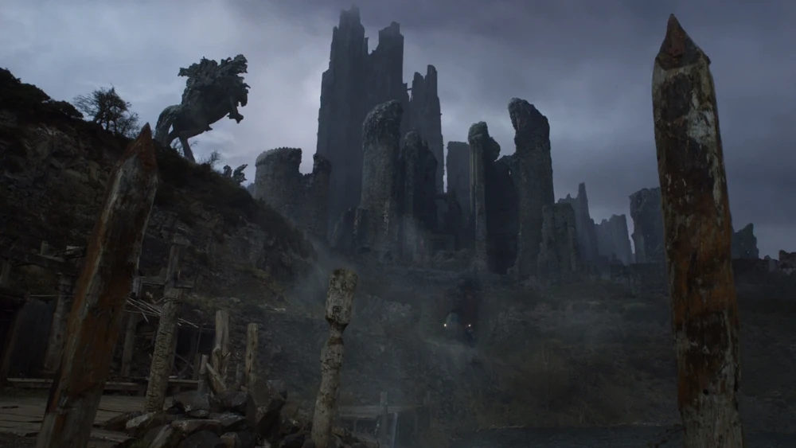
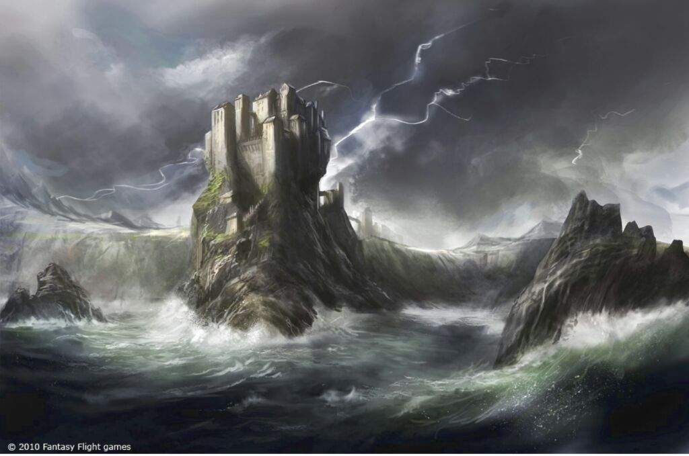
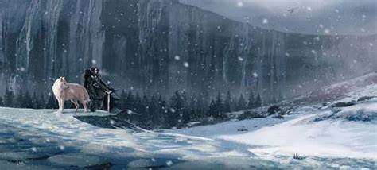

Aegon: "Renda-se agora e eu o farei Senhor das Ilhas de Ferro.
Tenho oito mil homens aqui"
Harren: "O que são oito mil homens? Eu tenho muralhas!"
Aegon: "Eu tenho dragões"
Harren: "Pedras não queimam"
Aegon: "Ao anoitecer, vocês estarão acabados."
―Aegon e Harren

A GUERRA:
Terras Fluviais e das Ilhas de Ferro
Aegon atacou primeiramente o rei das Ilhas de Ferro, a noroeste. O
rei Harren, o Negro governava tanto as Ilhas de Ferro quanto as
Terras Fluviais de sua recém-construída fortaleza em Harrenhal, o
maior castelo de Westeros, considerado inexpugnável contra cerco
ou ataque. Diante da ameaça Targaryen, o regime de terror de
Harren entrou em colapso. Liderados por Edmyn Tully, grande parte
dos senhores das terras fluviais - Mallister, Bracken, Frey,
Blackwood - decidiu se juntar a Aegon, que marchou para Harrenhal
e cercou a imensa fortaleza.

A GUERRA:
Terras da Tempestade
o Rei Loren Lannister de Rochedo Casterly e o Rei Mern IX
Gardener, da Campina, se aliaram e juntaram seus exércitos contra
o invasor. Essa grande tropa, chamada pelos historiadores de
"Exército dos dois Reis", possuía cerca de 55 mil homens, sendo
cinco mil cavaleiros montados, enquanto os Targaryen possuíam
apenas 10 mil homens, muitos com lealdade duvidosa. Os aliados
avançaram e quebraram as linhas dos Targaryen. Os dragões voaram e
começaram a colocar fogo por todos os lados, especialmente nas
áreas a favor do vento. Dentre os aliados, 4 000 homens morreram
no fogo enquanto 10 000 homens sofreram queimaduras. Outros
milhares ficaram feridos. Dos Targaryen, menos de 100 homens foram
perdidos enquanto Visenya levou uma flechada no ombro. O Rei Mern
de Jardim de Cima e seus filhos morreram em batalha mas o Rei
Loren Lannister conseguiu escapar. Ele foi encontrado no dia
seguinte e então dobrou o joelho. Aegon manteve sua promessa e
nomeou Loren como Senhor de Rochedo Casterly e Protetor do Oeste,
e depois voou para Jardim de Cima e o castelo foi rendido pelo
intendente Harlen Tyrell. Como recompensa, ele o nomeou Senhor da
Campina e Protetor do Sul. A nomeação enfureceu a Casa Florent
que, por direito de sangue, possuía a melhor pretensão à Jardim de
Cima.

A GUERRA:
Norte e o Vale
Torrhen Stark tinha levantado um exército de 30.000 homens e
cruzado o Gargalo. Aegon marchou com uma tropa com metade desse
número. Os Stark esperaram em Fosso Cailin e tomaram conselho. O
irmão bastardo de Torrhen, Brandon Snow, se ofereceu para
infiltrar-se no acampamento de Aegon e matar os três dragões. Ao
invés disso, Torrhen mandou três meistres encontrarem Aegon depois
do Tridente. Torrhen dobraria o joelho e ficaria conhecido para
sempre como “O Rei Que Ajoelhou”. Aegon decidiu manter Torrhen
como Senhor do Norte e de Winterfell. Posteriormente, uma pousada
foi construída no local do evento, conhecida como a "Pousada do
Homem que se ajoelhou".